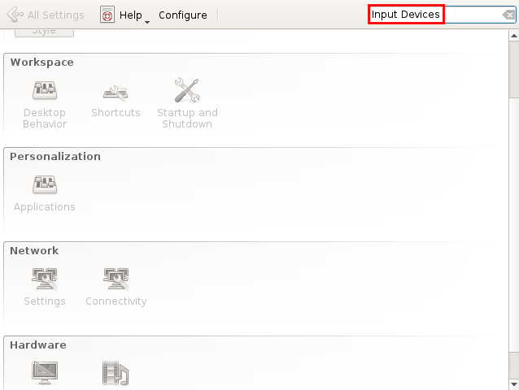

one more issue i just have discovered , the keyboard layouts changes are no more working inside whonix-testing.
english<—>spain not working , only english.

one more issue i just have discovered , the keyboard layouts changes are no more working inside whonix-testing.
english<—>spain not working , only english.
i dont think i can find that working in Qubes:

Sure a new bug?
That method is for Non-Qubes-Whonix only.
How do you change the keyboard layout in Qubes generally? For Qubes dom0, Fedora Template, Debian Template? The same mechanism has to be used for Qubes-Whonix.
Basically set the keyboard layout in dom0 and it should be automatically propagating to all newly started (and perhaps even already running?) VMs. Does Qubes have documentation for that?
Maybe it never comes up since users usually choose their keyboard layout in Qubes installer and then stick with it?
See also:
yeah i know its for non-qubes-whonix only , but even that i tried it out.
yes , as i can change the keyboard layout of a standealoneVM based on whonix 14 stable. but its not working on the current whonix testing.
True, not working anymore inside whonix testing.
https://www.whonix.org/wiki/Keyboard_Layout#Qubes-Whonix was contributed just a few minutes ago. Check it out.
nothing actually working with me. its only inside new whonix-testing.
old whonix-stable version everything works like normal.